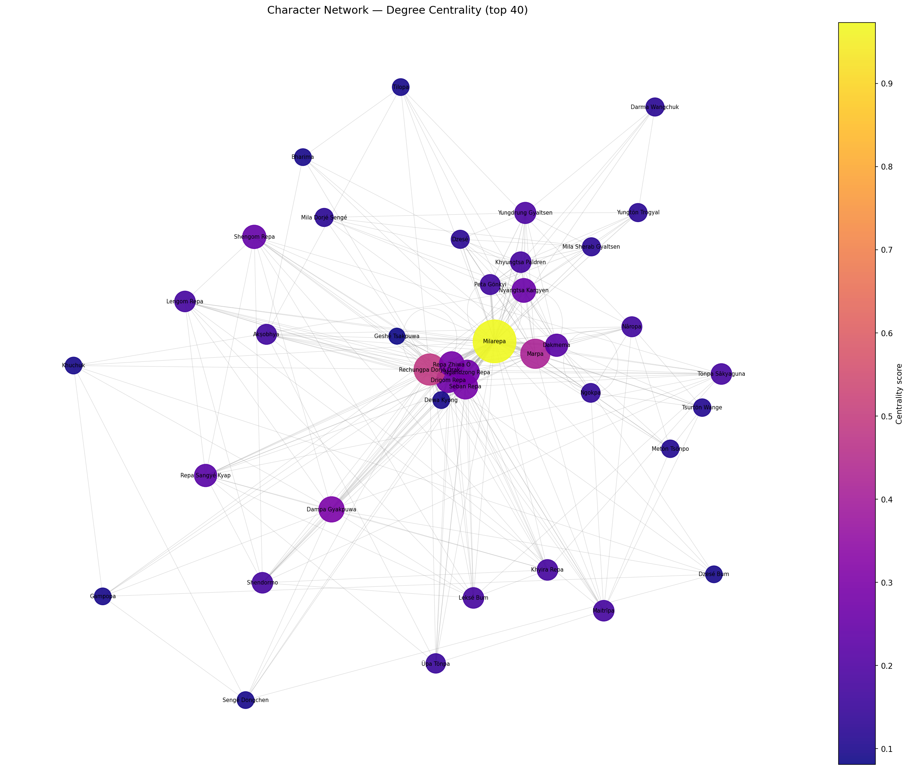
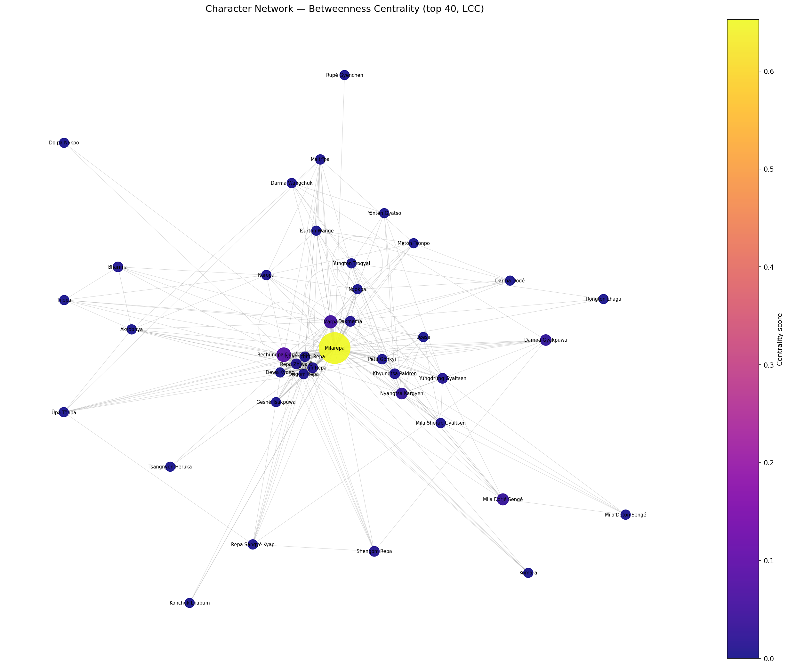
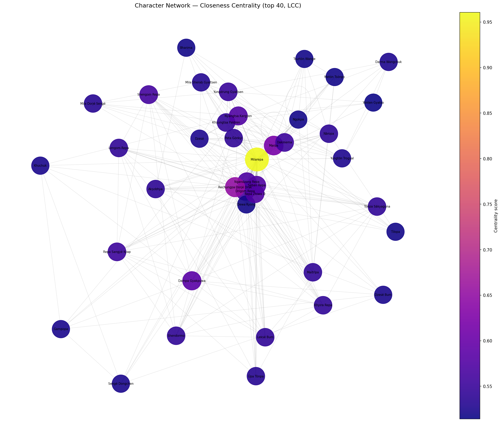
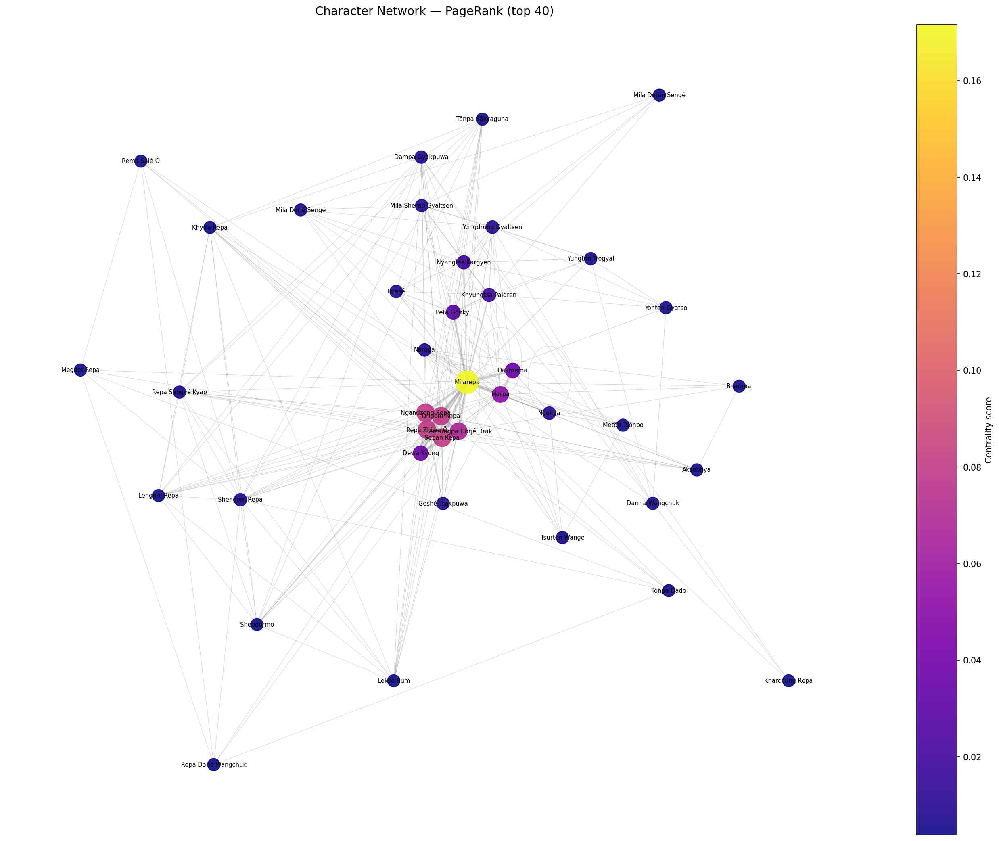
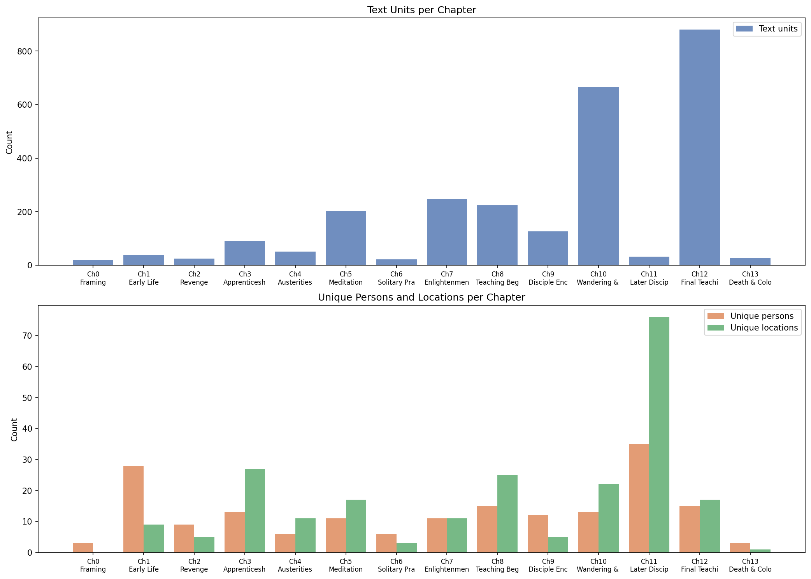
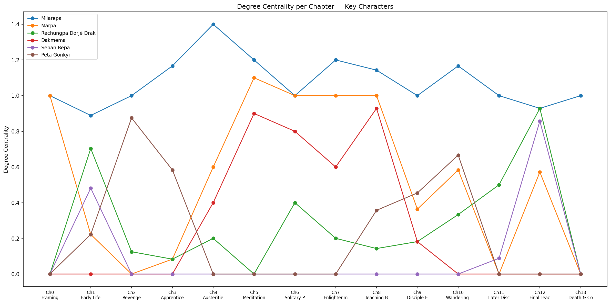
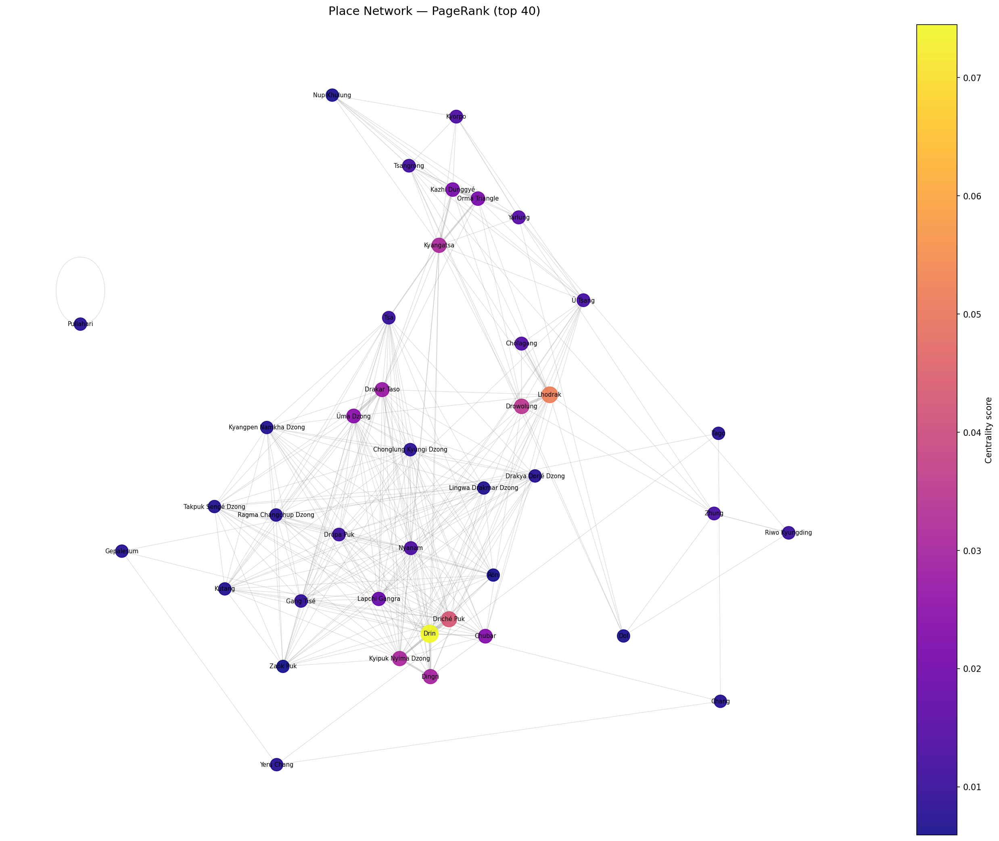
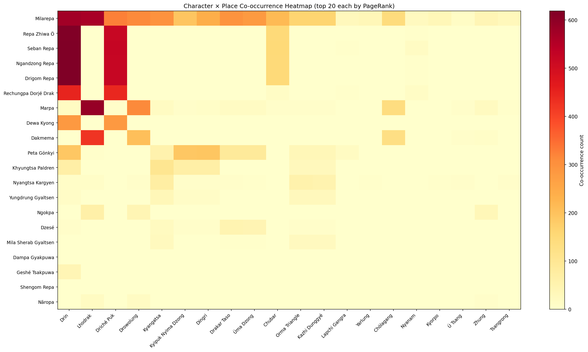
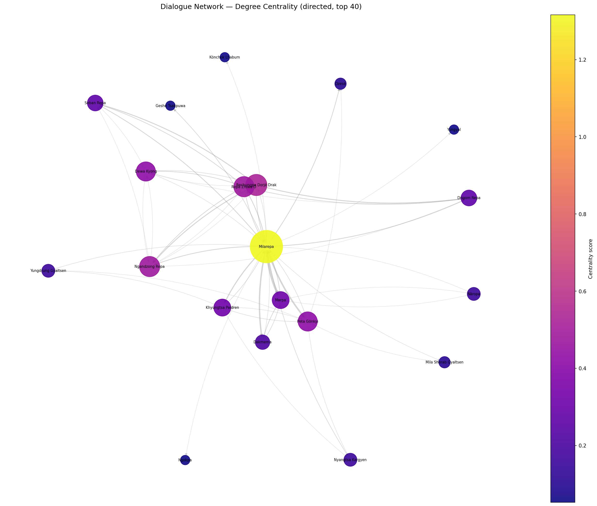

This project applies network analysis to a tagged dataset of the text (16,898 rows, 2,647 unique text units) to explore the structure, characters, and connections across the work. The analysis covers twelve methods (degree centrality, betweenness, shortest paths, closeness, eccentricity, clustering, pageRank, weighted edges, temporal evolution, place networks, and dialogue structure) each run against character co-occurrence, place co-occurrence, and directed speech graphs built annotations. This display and summary of data is in complement to the Nodegoat views for each respective method.
Degree centrality measures what fraction of all other nodes a given node is directly connected to. In a co-occurrence graph, a high degree means appearing alongside many distinct characters, which indicates broad narrative presence rather than deep local embeddedness.
| # | Character | Score | Partners |
|---|---|---|---|
| 1 | Milarepa | 0.973 | 72 |
| 2 | Rechungpa Dorjé Drak | 0.487 | 36 |
| 3 | Marpa | 0.419 | 31 |
| 4 | Dampa Gyakpuwa | 0.297 | 22 |
| 5 | Seban Repa | 0.284 | 21 |
| 6 | Repa Zhiwa Ö | 0.284 | 21 |
| 7 | Drigom Repa | 0.270 | 20 |
| 8 | Ngandzong Repa | 0.270 | 20 |
| 9 | Nyangtsa Kargyen | 0.257 | 19 |
| 10 | Shengom Repa | 0.243 | 18 |
| 11 | Dakmema | 0.216 | 16 |
| 12 | Repa Sangyé Kyap | 0.216 | 16 |
| 13 | Maitrīpa | 0.176 | 13 |
| 14 | Nāropa | 0.162 | 12 |
| 15 | Peta Gönkyi | 0.162 | 12 |
| # | Place | Score |
|---|---|---|
| 1 | Drin | 0.496 |
| 2 | Lapchi Gangra | 0.489 |
| 3 | Nyanam | 0.397 |
| 4 | Gang Tisé | 0.369 |
| 5 | Dröpa Puk | 0.369 |
| 6 | Drakar Taso | 0.340 |
| 7 | Chonglung Kyungi Dzong | 0.340 |
| 8 | Chubar | 0.312 |
| 9 | Driché Puk | 0.298 |
| 10 | Üma Dzong | 0.298 |
| 11 | Kyipuk Nyima Dzong | 0.298 |
| 12 | Kutang | 0.298 |
| 13 | Düdül Puk | 0.277 |
| 14 | Tsa | 0.270 |
| 15 | Ösal Puk | 0.270 |

Milarepa's degree centrality of 0.973 means he shares at least one text unit with 72 of the 74 nodes in the largest component. The two characters he does not directly co-occur with are among the most peripheral in the graph. Rechungpa Dorjé Drak ranks second at 0.487, co-occurring with 36 distinct characters. Marpa follows at 0.419. Ranks four through ten show a tighter grouping between 0.243 and 0.297, reflecting a set of figures who appear across a similar range of co-occurrence partners.
In the place graph, Drin and Lapchi Gangra hold the top two positions at 0.496 and 0.489, meaning each co-occurs with just under half of all other places in the network. The remaining top places range from 0.270 to 0.397.
Betweenness centrality counts what fraction of all shortest paths between any two nodes in the graph pass through a given node. A node with high betweenness is a structural broker. Removing it makes large parts of the network less connected or effectively disconnected. The weighted version uses co-occurrence count as edge weight and penalizes paths through rarely-shared relationships.
| # | Character | Score |
|---|---|---|
| 1 | Milarepa | 0.6526 |
| 2 | Rechungpa Dorjé Drak | 0.0793 |
| 3 | Marpa | 0.0503 |
| 4 | Mila Dorjé Sengé | 0.0295 |
| 5 | Nyangtsa Kargyen | 0.0238 |
| 6 | Dampa Gyakpuwa | 0.0208 |
| 7 | Dakmema | 0.0093 |
| 8 | Yungdrung Gyaltsen | 0.0091 |
| 9 | Shengom Repa | 0.0088 |
| 10 | Seban Repa | 0.0085 |
| # | Character | Score |
|---|---|---|
| 1 | Milarepa | 0.4063 |
| 2 | Marpa | 0.1720 |
| 3 | Maitrīpa | 0.1337 |
| 4 | Rechungpa Dorjé Drak | 0.1284 |
| 5 | Dampa Gyakpuwa | 0.0867 |
| 6 | Yungdrung Gyaltsen | 0.0745 |
| 7 | Darma Wangchuk | 0.0604 |
| 8 | Mila Dorjé Sengé | 0.0490 |
| 9 | Akṣobhya | 0.0457 |
| 10 | Marpa Golek | 0.0382 |
| # | Place | Score |
|---|---|---|
| 1 | Ü Tsang | 0.1826 |
| 2 | Drin | 0.1451 |
| 3 | Lhodrak | 0.1106 |
| 4 | Lapchi Gangra | 0.1064 |
| 5 | Drowolung | 0.0996 |
| 6 | Chubar | 0.0952 |
| 7 | Nyanam | 0.0708 |
| 8 | Dröpa Puk | 0.0485 |
| 9 | Drakar Taso | 0.0484 |
| 10 | Kyangatsa | 0.0474 |

Milarepa's unweighted betweenness of 0.6526 means that roughly 65 percent of all shortest paths between any two characters in the graph pass through him. The next-highest figure, Rechungpa, controls 7.9 percent. When edge weights are applied, penalizing paths through rarely co-occurring pairs, Marpa rises from third to second (0.172) and Maitrīpa moves from outside the top ten to third (0.134). This indicates that their relationships, though fewer in raw count, carry more weight than the unweighted ranking reflects.
In the place graph, Ü Tsang holds the highest betweenness at 0.183, above Drin (0.145) and Lhodrak (0.111). Despite ranking lower in degree and PageRank than those two sites, Ü Tsang controls a higher share of shortest paths between place clusters.
The shortest path between two nodes is the minimum number of co-occurrence hops required to connect them. Distance 1 means the pair shares at least one text unit directly. Distance 2 means they do not but share a mutual neighbor.
Most major character pairs in the table are at distance 1 from Milarepa, meaning they share at least one text unit directly. The one distance-2 pair in the listed set, Dakmema and Rechungpa Dorjé Drak, has no direct shared text unit, so the shortest path routes through Milarepa.
The Milarepa–Marpa and Milarepa–Nāropa edges are distance 1 even though Marpa and Nāropa are absent from most of the text's later chapters. Co-occurrence is measured by shared tagging within passages, which includes passages where a figure is referenced or invoked, not only where they are physically present as actors.
Closeness is the inverse of average shortest-path distance from a node to all others. A high closeness score means a node can reach every other node in few hops. It is globally near, not just locally dense.
| # | Character | Score |
|---|---|---|
| 1 | Milarepa | 0.9605 |
| 2 | Rechungpa Dorjé Drak | 0.6518 |
| 3 | Marpa | 0.6186 |
| 4 | Dampa Gyakpuwa | 0.5840 |
| 5 | Seban Repa | 0.5748 |
| 6 | Repa Zhiwa Ö | 0.5748 |
| 7 | Nyangtsa Kargyen | 0.5748 |
| 8 | Drigom Repa | 0.5703 |
| 9 | Ngandzong Repa | 0.5703 |
| 10 | Shengom Repa | 0.5615 |
| 11 | Dakmema | 0.5530 |
| 12 | Repa Sangyé Kyap | 0.5530 |
| 13 | Maitrīpa | 0.5407 |
| 14 | Nāropa | 0.5368 |
| 15 | Peta Gönkyi | 0.5407 |
| # | Place | Score |
|---|---|---|
| 1 | Drin | 0.6439 |
| 2 | Lapchi Gangra | 0.6377 |
| 3 | Nyanam | 0.5815 |
| 4 | Chubar | 0.5789 |
| 5 | Dröpa Puk | 0.5665 |
| 6 | Lhodrak | 0.5641 |
| 7 | Ü Tsang | 0.5546 |
| 8 | Drowolung | 0.5523 |
| 9 | Gang Tisé | 0.5523 |
| 10 | Drakar Taso | 0.5500 |

Milarepa's closeness of 0.961 means that on average he is separated from any other node by just over one hop. The score drops to 0.652 for Rechungpa and 0.619 for Marpa. Ranks four through fifteen fall within a narrow band between 0.537 and 0.584, including figures from different parts of the text such as Repa disciples, family members, and lineage ancestors who appear only in invocation. This compression reflects the graph's small diameter. With a maximum path length of 3, second-order closeness scores converge once the top cluster is set aside.
Eccentricity is the maximum shortest-path distance from a node to any other node in the graph. Low eccentricity indicates structural centrality and high eccentricity indicates peripherality. The diameter is the maximum eccentricity across all nodes and the radius is the minimum.
| Character | Eccentricity |
|---|---|
| Milarepa | 2 |
| Rechungpa Dorjé Drak | 2 |
| Mila Dorjé Sengé | 2 |
| Nyangtsa Kargyen | 2 |
| Character | Eccentricity |
|---|---|
| Marpa | 3 |
| Dakmema | 3 |
| Nāropa | 3 |
| Tilopa | 3 |
| Maitrīpa | 3 |
| Akṣobhya | 3 |
| Drigom Repa | 3 |
| Seban Repa | 3 |
Only four characters have eccentricity 2, the minimum in this graph. They are Milarepa, Rechungpa Dorjé Drak, Mila Dorjé Sengé, and Nyangtsa Kargyen. This means each of them can reach every other node within two hops. The majority of characters, including Marpa, Nāropa, Tilopa, Dakmema, and all four main Repa disciples, have eccentricity 3, meaning at least one other node is three hops away from them.
The graph's diameter is 3 (no pair requires more than three steps) and its radius is 2 (the most central nodes need at most two). Characters in the periphery with eccentricity 3 include both high-degree figures like Marpa and Seban Repa and lower-degree figures like Tilopa and Akṣobhya. The shared property is that each has at least one node it cannot reach in two hops, not that they are infrequently mentioned.
The (weighted) clustering coefficient of a node measures the fraction of its neighbors that are also neighbors of each other. High clustering indicates embeddedness in a tight, mutually connected group such as a disciple circle, a family unit, or a lineage cluster. Low clustering despite high degree is the signature of a structural broker.
| # | Character | Coeff. |
|---|---|---|
| 1 | Dewa Kyong | 0.347 |
| 2 | Geshé Tsakpuwa | 0.109 |
| 3 | Ngandzong Repa | 0.066 |
| 4 | Drigom Repa | 0.065 |
| 5 | Repa Zhiwa Ö | 0.059 |
| 6 | Seban Repa | 0.059 |
| 7 | Ngokpa | 0.034 |
| 8 | Tsangnyön Heruka | 0.029 |
| 9 | Peta Gönkyi | 0.029 |
| 10 | Bari Lotsawa | 0.025 |
| Character | Degree | Clust. |
|---|---|---|
| Milarepa | 72 | 0.007 |
| Rechungpa Dorjé Drak | 36 | 0.019 |
| Marpa | 31 | 0.013 |
| Dampa Gyakpuwa | 22 | 0.002 |
| Nyangtsa Kargyen | 19 | 0.009 |
| Shengom Repa | 18 | 0.002 |
| Repa Sangyé Kyap | 16 | 0.003 |
| Yungdrung Gyaltsen | 14 | 0.012 |
| Maitrīpa | 13 | 0.004 |
Dewa Kyong's clustering coefficient of 0.347 is the highest in the graph, more than three times the next figure's (Geshé Tsakpuwa at 0.109). Ngandzong Repa, Drigom Repa, Seban Repa, and Repa Zhiwa Ö score between 0.059 and 0.066, the highest values among characters with more than 15 neighbors. All four are mutually connected to each other in the graph, meaning every pair among them shares at least one direct edge.
Milarepa's coefficient of 0.007 means fewer than one percent of his 72 neighbors are directly connected to each other. Marpa (0.013) and Rechungpa (0.019) are similarly low. In general, the characters with the highest degree scores have the lowest clustering coefficients, indicating their connections span distinct groups that share few edges among themselves.
PageRank assigns scores by propagating prestige. A node scores highly if it is connected to other high-scoring nodes. Unlike degree, it is not fooled by raw volume. A figure mentioned briefly by many important characters may rank above one mentioned frequently by minor ones.
| # | Character | Score |
|---|---|---|
| 1 | Milarepa | 0.1716 |
| 2 | Repa Zhiwa Ö | 0.0802 |
| 3 | Seban Repa | 0.0802 |
| 4 | Ngandzong Repa | 0.0798 |
| 5 | Drigom Repa | 0.0789 |
| 6 | Rechungpa Dorjé Drak | 0.0678 |
| 7 | Marpa | 0.0517 |
| 8 | Dewa Kyong | 0.0368 |
| 9 | Dakmema | 0.0359 |
| 10 | Peta Gönkyi | 0.0267 |
| 11 | Khyungtsa Paldren | 0.0185 |
| 12 | Nyangtsa Kargyen | 0.0171 |
| 13 | Yungdrung Gyaltsen | 0.0109 |
| 14 | Ngokpa | 0.0109 |
| 15 | Nāropa | 0.0071 |
| # | Place | Score |
|---|---|---|
| 1 | Drin | 0.0745 |
| 2 | Lhodrak | 0.0519 |
| 3 | Driché Puk | 0.0427 |
| 4 | Drowolung | 0.0348 |
| 5 | Kyangatsa | 0.0312 |
| 6 | Kyipuk Nyima Dzong | 0.0310 |
| 7 | Dingri | 0.0299 |
| 8 | Drakar Taso | 0.0276 |
| 9 | Üma Dzong | 0.0246 |
| 10 | Chubar | 0.0236 |
| 11 | Orma Triangle | 0.0212 |
| 12 | Kazhi Dunggyé | 0.0211 |
| 13 | Lapchi Gangra | 0.0184 |
| 14 | Yarlung | 0.0150 |
| 15 | Chölagang | 0.0141 |

The four Repa disciples (Repa Zhiwa Ö, Seban Repa, Ngandzong Repa, and Drigom Repa) score between 0.0789 and 0.0802, ranking second through fifth. They score above Rechungpa (0.0678) and Marpa (0.0517), despite both of those characters having higher degree scores. PageRank redistributes scores based on neighbor prestige, and the Repa disciples are each connected to Milarepa (the top-scoring node) and to each other.
In the place graph, Lhodrak ranks second at 0.0519, above its degree centrality rank of sixth. Drin leads at 0.0745. The divergence between degree and PageRank rankings for several places shows that connection count and neighbor prestige do not always align in this graph.
Edge weight equals the number of text units in which both nodes are co-tagged. High weight is not mere frequency. It reflects the sustained, repeated presence of two figures in the same textual space. A weight of 700 means those two nodes shared 700 distinct passages.
| # | Character A | Character B | Weight | |
|---|---|---|---|---|
| 1 | Ngandzong Repa | ↔ | Repa Zhiwa Ö | 708 |
| 2 | Drigom Repa | ↔ | Ngandzong Repa | 699 |
| 3 | Drigom Repa | ↔ | Seban Repa | 698 |
| 4 | Ngandzong Repa | ↔ | Seban Repa | 698 |
| 5 | Drigom Repa | ↔ | Repa Zhiwa Ö | 696 |
| 6 | Seban Repa | ↔ | Repa Zhiwa Ö | 695 |
| 7 | Milarepa | ↔ | Marpa | 692 |
| 8 | Milarepa | ↔ | Ngandzong Repa | 460 |
| 9 | Milarepa | ↔ | Seban Repa | 460 |
| 10 | Milarepa | ↔ | Repa Zhiwa Ö | 458 |
| 11 | Milarepa | ↔ | Dakmema | 458 |
| 12 | Ngandzong Repa | ↔ | Rechungpa Dorjé Drak | 456 |
| 13 | Rechungpa Dorjé Drak | ↔ | Seban Repa | 455 |
| 14 | Rechungpa Dorjé Drak | ↔ | Repa Zhiwa Ö | 453 |
| 15 | Marpa | ↔ | Dakmema | 452 |
| 16 | Milarepa | ↔ | Drigom Repa | 449 |
| 17 | Milarepa | ↔ | Peta Gönkyi | 337 |
| 18 | Milarepa | ↔ | Rechungpa Dorjé Drak | 322 |
| 19 | Milarepa | ↔ | Khyungtsa Paldren | 173 |
| 20 | Milarepa | ↔ | Dewa Kyong | 165 |
The six highest-weight pairings are all between the four Repa disciples (Ngandzong, Drigom, Seban, and Repa Zhiwa Ö) with weights ranging from 695 to 708. The Milarepa–Marpa pairing ranks seventh at 692. A weight of 692 means those two nodes were co-tagged in 692 distinct text units.
There is a sharp drop from rank 7 (692) to rank 8 (460). Ranks 8 through 16 range from 449 to 460, a tight band that includes all four of Milarepa's pairings with the Repa disciples and his pairing with Dakmema. Ranks 17 through 20 fall between 165 and 337.
Each chapter functions as a temporal slice. Building a separate co-occurrence graph per chapter and tracking centrality scores across those slices shows how the network's center of gravity shifts across the narrative arc.
| Ch | Phase | Units | Characters | Places | Top PageRank |
|---|---|---|---|---|---|
| 0 | Framing | 20 | 3 | 0 | Milarepa, Tsangnyön Heruka, Marpa |
| 1 | Early Life | 37 | 28 | 9 | Milarepa, Rechungpa, Mila Sherab Gyaltsen |
| 2 | Revenge | 25 | 9 | 5 | Milarepa, Nyangtsa Kargyen, Peta Gönkyi |
| 3 | Apprenticeship (Marpa) | 90 | 13 | 27 | Milarepa, Nyangtsa Kargyen, Yungtön Trogyal |
| 4 | Austerities | 50 | 6 | 11 | Milarepa, Marpa, Yungtön Trogyal |
| 5 | Meditation | 202 | 11 | 17 | Milarepa, Marpa, Dakmema |
| 6 | Solitary Practice | 22 | 6 | 3 | Milarepa, Marpa, Ngokpa |
| 7 | Enlightenment | 247 | 11 | 11 | Milarepa, Marpa, Dakmema |
| 8 | Teaching Begins | 223 | 15 | 25 | Milarepa, Marpa, Dakmema |
| 9 | Disciple Encounters | 126 | 12 | 5 | Milarepa, Nyangtsa Kargyen, Mila Sherab Gyaltsen |
| 10 | Wandering & Teaching | 665 | 13 | 22 | Milarepa, Peta Gönkyi, Khyungtsa Paldren |
| 11 | Later Disciples | 32 | 35 | 76 | Milarepa, Rechungpa, Seban Repa |
| 12 | Final Teachings | 880 | 15 | 17 | Repa Zhiwa Ö, Drigom Repa, Ngandzong Repa |
| 13 | Death & Colophon | 28 | 3 | 1 | Rupé Gyenchen, Milarepa |


Chapter 12 contains 880 text units, more than any other chapter and more than chapters 1 through 9 combined. It is also the only chapter where Milarepa does not lead PageRank. Repa Zhiwa Ö, Drigom Repa, and Ngandzong Repa rank first through third in that chapter's slice. Chapter 11 has the highest character count (35) and place count (76) of any chapter but only 32 text units, tied with Chapter 0 for the lowest text-unit count. Chapter 11's character and place counts are high because each figure in that chapter tends to appear in its own short passage, rather than sharing passages with others.
Marpa appears in the top PageRank positions for chapters 4 through 8, then drops from the top positions entirely from chapter 9 onward. The degree centrality chart shows that drop as a decline across the mid-narrative chapters. Milarepa holds the top PageRank position in every chapter except 12.
Two places are connected when they appear in the same text unit. The resulting network encodes geographic co-citation. Sites that are mentioned together in narrative or song become neighbors. The character–place bipartite data adds a second layer showing which figures are most strongly associated with which sites.


| Character | Primary site | Co-occurrences |
|---|---|---|
| Milarepa | Drin | 575 |
| Seban Repa | Drin | 619 |
| Ngandzong Repa | Drin | 618 |
| Drigom Repa | Drin | 618 |
| Repa Zhiwa Ö | Drin | 616 |
| Marpa | Lhodrak | 588 |
| Dakmema | Lhodrak | 425 |
| Rechungpa Dorjé Drak | Drin | 449 |
| Peta Gönkyi | Dingri | 192 |
| Nyangtsa Kargyen | Kyangatsa | 71 |
| Khyungtsa Paldren | Kyangatsa | 104 |
| Ngokpa | Lhodrak | 63 |
| Nāropa | Lhodrak | 19 |
Drin is the primary place for five of the thirteen characters in the association table. These are all four Repa disciples and Milarepa himself, with co-occurrence counts between 575 and 619. Lhodrak is the primary site for Marpa (588), Dakmema (425), Ngokpa (63), and Nāropa (19). Rechungpa's highest count is also at Drin (449). Peta Gönkyi's highest association is with Dingri (192), and both Nyangtsa Kargyen and Khyungtsa Paldren are most associated with Kyangatsa (71 and 104 respectively).
In the place co-occurrence network, Drin anchors the center with the highest degree and PageRank scores. Lhodrak forms a secondary cluster. The betweenness ranking places Ü Tsang at the top despite it ranking sixth in degree, indicating that it lies on many shortest paths between the two primary clusters.
In Songs, Letters, and Prayers, the dataset distinguishes between characters tagged as Explicit (active singer or writer) and those tagged as Referenced or Implicit (addressed, invoked, or implied). I drew a directed edge from speaker to addressed party, weighted by co-occurrence. The result is an asymmetric speech graph showing who speaks to whom, and how often.
| # | Speaker | Weight |
|---|---|---|
| 1 | Milarepa | 715 |
| 2 | Rechungpa Dorjé Drak | 247 |
| 3 | Repa Zhiwa Ö | 168 |
| 4 | Marpa | 57 |
| 5 | Khyungtsa Paldren | 32 |
| 6 | Peta Gönkyi | 28 |
| 7 | Dakmema | 27 |
| 8 | Ngandzong Repa | 5 |
| 9 | Dewa Kyong | 4 |
| 10 | Nāropa | 2 |
| # | Addressed | Weight |
|---|---|---|
| 1 | Marpa | 192 |
| 2 | Drigom Repa | 128 |
| 3 | Seban Repa | 128 |
| 4 | Ngandzong Repa | 127 |
| 5 | Milarepa | 126 |
| 6 | Dakmema | 123 |
| 7 | Peta Gönkyi | 117 |
| 8 | Repa Zhiwa Ö | 81 |
| 9 | Khyungtsa Paldren | 69 |
| 10 | Dewa Kyong | 53 |

| # | Character | Score |
|---|---|---|
| 1 | Milarepa | 0.1540 |
| 2 | Marpa | 0.1179 |
| 3 | Dakmema | 0.0914 |
| 4 | Drigom Repa | 0.0623 |
| 5 | Seban Repa | 0.0623 |
| 6 | Peta Gönkyi | 0.0542 |
| 7 | Ngandzong Repa | 0.0532 |
| 8 | Rechungpa Dorjé Drak | 0.0449 |
| 9 | Repa Zhiwa Ö | 0.0443 |
| 10 | Khyungtsa Paldren | 0.0416 |
Milarepa's out-degree weight of 715 means he is tagged as an explicit speaker in 715 weighted text units. Rechungpa follows at 247 and Repa Zhiwa Ö at 168. No other character exceeds 60. In the in-degree table, Marpa receives the highest weight at 192, above Drigom Repa and Seban Repa (both 128), Ngandzong Repa (127), and Milarepa (126). Marpa thus ranks first among characters most often addressed and fourth among characters who speak, a gap between those two positions larger than for any other character in the graph.
In the dialogue PageRank table, Milarepa ranks first (0.1540) and Marpa second (0.1179). Dakmema ranks third at 0.0914, above all the main disciples. PageRank in this directed graph scores a node by how much it is addressed by other high-scoring speakers.
Milarepa holds the top position in every character metric (degree, betweenness, closeness, PageRank, and dialogue out-degree), with the single exception of Chapter 12's per-chapter PageRank, where the Repa Quartet leads. His degree centrality (0.973) and betweenness (0.653) are substantially higher than any other character. He is one of four nodes in the center of the eccentricity graph, and the only node with both near-maximum closeness and near-zero clustering.
Marpa's scores differ considerably across metrics. In unweighted betweenness he ranks third and in weighted betweenness he rises to second. In eccentricity he sits in the periphery at 3. In dialogue in-degree he ranks first, above all characters including Milarepa. These differences reflect what each metric measures. Eccentricity captures maximum distance, betweenness captures path routing, and dialogue in-degree captures direct address.
The four Repa disciples (Ngandzong, Drigom, Seban, and Repa Zhiwa Ö) hold the six highest pairwise edge weights in the character network and the highest clustering coefficients among high-degree nodes. Their PageRank scores cluster within a narrow band (0.0789–0.0802). Chapter 12, where they co-appear throughout, is the longest chapter in the text by text unit count.
The place network has two primary clusters by most metrics. Drin and Lhodrak both score at the top across degree, closeness, and PageRank, with Drin leading in all three. Lhodrak ranks above its degree position in PageRank. Ü Tsang leads in betweenness despite ranking sixth in degree, connecting sub-clusters that the two primary sites do not bridge directly.